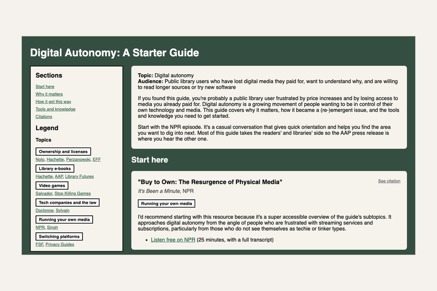

I'm an MLIS student at Dominican University with a focus on metadata and digital asset management.

Metadata Standards
View how I mapped a MARC record to MODS field by field, encoded Dublin Core records in XML, and wrote RDF triples with names and subjects taken from Library of Congress authority files.

Digital Collections
This is where I planned a DAM system for a hospital IT department, including its metadata schemas and controlled vocabularies, cataloged a video collection in Dublin Core, and tagged a photo album by place, landmark, and function.

Library Services
See here for a reference subject guide I put together for public library patrons on digital privacy and autonomy, along with a workshop where patrons see what data their free apps collect and who has access to it.